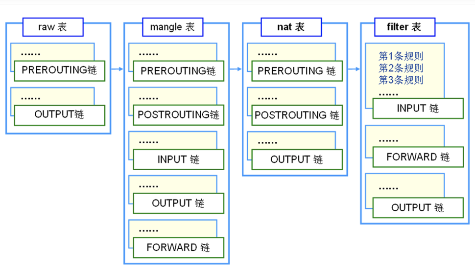
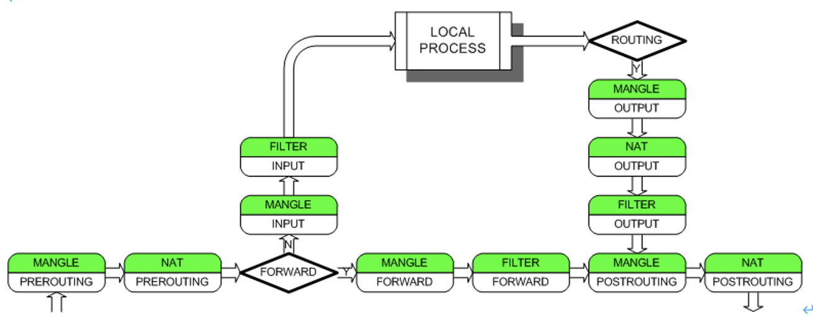
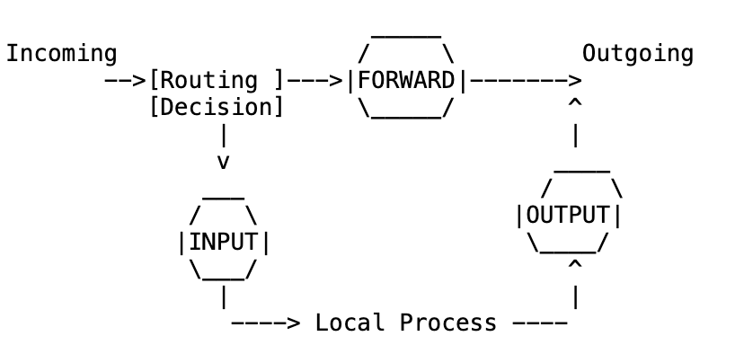
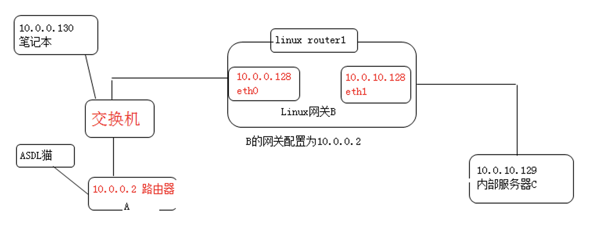

iptables防火墙应用指南
1. iptable防火墙
Iptables表、链、规则（图3） 
1.1. 介绍
http://www.netfilter.org/documentation/HOWTO//packet-filtering-HOWTO-10.html
iptables工作在OSI七层的2,3,4层。
Differences Between iptables and ipchains
Firstly, the names of the built-in chains have changed from lower case to UPPER case, because the INPUT and OUTPUT chains now only get locally-destined and locally-generated packets. They used to see all incoming and all outgoing packets respectively.
The `-i' flag now means the incoming interface, and only works in the INPUT and FORWARD chains. Rules in the FORWARD or OUTPUT chains that used `-i' should be changed to `-o'.
TCP and UDP ports now need to be spelled out with the --source-port or --sport (or --destination-port/--dport) options, and must be placed after the `-p tcp' or `-p udp' options, as this loads the TCP or UDP extensions respectively.
The TCP -y flag is now --syn, and must be after `-p tcp'.
The DENY target is now DROP, finally.
Zeroing single chains while listing them works.
Zeroing built-in chains also clears policy counters.
Listing chains gives you the counters as an atomic snapshot.
REJECT and LOG are now extended targets, meaning they are separate kernel modules.
Chain names can be up to 31 characters.
MASQ is now MASQUERADE and uses a different syntax. REDIRECT, while keeping the same name, has also undergone a syntax change. See the NAT-HOWTO for more information on how to configure both of these.
The -o option is no longer used to direct packets to the userspace device (see -i above). Packets are now sent to userspace via the QUEUE target.
Probably heaps of other things I forgot.
1.2. iptables名称和术语
http://www.opsers.org/security/iptables-related-concepts-and-processes-the-packet-figure.html
匹配（match）：符合指定的条件，比如指定的 IP 地址和端口。
丢弃（drop）：当一个包到达时，简单地丢弃，不做其它任何处理。
接受（accept）：和丢弃相反，接受这个包，让这个包通过。
拒绝（reject）：和丢弃相似，但它还会向发送这个包的源主机发送错误消息。这个错误消息可以指定，也可以自动产生。
目标（target）：指定的动作，说明如何处理一个包，比如：丢弃，接受，或拒绝。
跳转（jump）：和目标类似，不过它指定的不是一个具体的动作，而是另一个链，表示要跳转到那个链上。
规则（rule）：一个或多个匹配及其对应的目标。
链（chain）：每条链都包含有一系列的规则，这些规则会被依次应用到每个遍历该链的数据包上。每个链都有各自专门的用途， 这一点我们下面会详细讨论。
表（table）：每个表包含有若干个不同的链，比如 filter 表默认包含有 INPUT，FORWARD，OUTPUT 三个链。iptables 有四个表，分别是：raw，nat，mangle和filter，每个表都有自己专门的用处，比如最常用filter表就是专门用来做包过滤的，而 nat 表是专门用来做NAT的。
策略（police）：我们在这里提到的策略是指，对于 iptables 中某条链，当所有规则都匹配不成功时其默认的处理动作。
连接跟踪（connection track）：又称为动态过滤，可以根据指定连接的状态进行一些适当的过滤，是一个很强大的功能，但同时也比较消耗内存资源。
1.2.1. 容器
1.2.2. Netfilter/iptables
Netfilter是表的容器。
1.2.3. 表(tables)
1.2.4. 链(chains)
1.2.5. 规则(policy)
1.3. iptables的工作流程
1.3.1. iptables进入主机进行过滤的流程图
 提示：防火墙规则的执行顺序默认为从前到后依次执行，遇到匹配的规则就不在继续向下检查，如果遇到不匹配的规则则会继续向下执行。
提示：防火墙规则的执行顺序默认为从前到后依次执行，遇到匹配的规则就不在继续向下检查，如果遇到不匹配的规则则会继续向下执行。
重点：匹配上拒绝规则也是匹配，因此，不再向下执行。
对于交换机的acl数据包过滤，除了顺序匹配外，还有深度匹配，即会读完所有规则，然后进行对比，匹配最精确匹配的规则。
1.4. iptables的表(tables)和链(chains)
iptables根据功能和表的定义划分，最常用的有三个表，分别为filter,nat,mangle,其中，每个表又各自包含不同的操作链(Chains)。 额外还有一个raw表，平时基本用不到。
表和链的关系

1.4.1. Filter表介绍
filter表 和主机自身有关，负责防火墙功能(过滤本机流入、流出的数据包)。是iptables默认使用的表。
INPUT 负责过滤所有目标地址是本机(防火墙)地址的数据包。就是过滤进入主机的数据包
FORWARD 负责转发流经主机但不进入本机的数据包。起转发作用，和nat表关系很大。
OUTPUT 处理所有原地址是本机地址的数据包。就是处理从主机发出去的数据包。
英文解释：filter
This is the default table (if no -t option is passed). It contains the built-in chains INPUT (for packets destined to local sockets), FORWARD (for packets being routed through the box), and OUTPUT (for locally-generated packets).
对于filter表的控制是我们实现本机防火墙功能的重要手段。
1.4.2. Nat表介绍
nat表 NAT英文全称是Network Address Translation，称是网络地址转换。负责来源与目的IP地址和port的转换。和主机本身无关。一般用于局域网多人共享上网或者内网IP映射外网IP及不同端口转换服务等功能，nat表的功能很重要。
OUTPUT 和主机发出去的数据包有关。在数据包路由之前改变主机产生的数据包的目标地址等
PREROUTING 在数据包刚到达防火墙时，进行路由判断之前执行的规则，改变包的目的地址(DNAT功能)、端口等。此链多用于把外部IP地址端口的服务，映射为内部IP地址端口的服务，映射为内部IP地址及端口。
POSTROUTING 在数据包离开防火墙时进行路由判断之后执行的规则，改变包的源地址(SNAT)、端口等。此链多用于局域网共享上网，把局域网的地址，转换为公网地址上网。
英文解释：nat:
This table is consulted when a packet that creates a new connection is encountered. It consists of three built-ins: PREROUTING (for altering packets as soon as they come in), OUTPUT (for altering locally-generated packets before routing), and POSTROUTING (for altering packets as they are about to go out).
1.4.3. Mangle表介绍 mangle表 主要负责修改数据包中特殊的路由标记，如TTL,TOS,MASK等
INPUT 同filter的INPUT
FORWARD 同filter的FORWARD
OUTPUT 同filter的OUTPUT
PREROUTING 同nat的PREROUTING
POSTROUTING 同nat的POSTROUTING
英文解释：mangle:
This table is used for specialized packet alteration. Until kernel 2.4.17 it had two built-in chains: PREROUTING (for altering incoming packets before routing) and OUTPUT (for altering locally-generated packets before routing). Since kernel 2.4.18, three other built-in chains are also supported: INPUT (for packets coming into the box itself), FORWARD (for alteing packets being routed through the box), and POSTROUTING (for altering packets as they are about to go out).
1.5. iptables的表与链工作流程图
 iptables包处理流程图
2. iptable命令规则
2.1. iptables -h 帮助
[root@lnmp ~]# iptables -h
iptables v1.3.5
Usage: iptables -[AD] chain rule-specification [options]
iptables -[RI] chain rulenum rule-specification [options]
iptables -D chain rulenum [options]
iptables -[LFZ] [chain] [options]
iptables -[NX] chain
iptables -E old-chain-name new-chain-name
iptables -P chain target [options]
iptables -h (print this help information)
Commands:
Either long or short options are allowed.
--append -A chain Append to chain
--delete -D chain Delete matching rule from chain
--delete -D chain rulenum
Delete rule rulenum (1 = first) from chain
--insert -I chain [rulenum]
Insert in chain as rulenum (default 1=first)
--replace -R chain rulenum
Replace rule rulenum (1 = first) in chain
--list -L [chain] List the rules in a chain or all chains
--flush -F [chain] Delete all rules in chain or all chains
--zero -Z [chain] Zero counters in chain or all chains
--new -N chain Create a new user-defined chain
--delete-chain
-X [chain] Delete a user-defined chain
--policy -P chain target
Change policy on chain to target
--rename-chain
-E old-chain new-chain
Change chain name, (moving any references)
Options:
--proto -p [!] proto protocol: by number or name, eg. `tcp'
--source -s [!] address[/mask]
source specification
--destination -d [!] address[/mask]
destination specification
--in-interface -i [!] input name[+]
network interface name ([+] for wildcard)
--jump -j target
target for rule (may load target extension)
--goto -g chain
jump to chain with no return
--match -m match
extended match (may load extension)
--numeric -n numeric output of addresses and ports
--out-interface -o [!] output name[+]
network interface name ([+] for wildcard)
--table -t table table to manipulate (default: `filter')
--verbose -v verbose mode
--line-numbers print line numbers when listing
--exact -x expand numbers (display exact values)
[!] --fragment -f match second or further fragments only
--modprobe=<command> try to insert modules using this command
--set-counters PKTS BYTES set the counter during insert/append
[!] --version -V print package version.
2.2. 实践iptables命令
2.2.1. 启动并查看iptables
/etc/init.d/iptables start
iptables -L -n 或 iptables -t filter -L -n 或iptables -L -n -v -x
--list -L [chain] List the rules in a chain or all chains
--numeric -n numeric output of addresses and ports
--table -t table table to manipulate (default: `filter')
--exact -x expand numbers (display exact values)
(在v的基础上，自动换算K,m)
--verbose -v verbose mode
提示：/etc/init.d/iptables start 启动不了
setup->firewall configuration-->enable 进行激活。
[root@lnmp ~]# /etc/init.d/iptables start
Flushing firewall rules: [ OK ]
Setting chains to policy ACCEPT: filter [ OK ]
Unloading iptables modules: [ OK ]
Applying iptables firewall rules: [ OK ]
Loading additional iptables modules: ip_conntrack_netbios_ns [ OK ]
[root@lnmp ~]# /etc/init.d/iptables status
Table: filter
Chain INPUT (policy ACCEPT)
num target prot opt source destination
1 RH-Firewall-1-INPUT all -- 0.0.0.0/0 0.0.0.0/0
Chain FORWARD (policy ACCEPT)
num target prot opt source destination
1 RH-Firewall-1-INPUT all -- 0.0.0.0/0 0.0.0.0/0
Chain OUTPUT (policy ACCEPT)
num target prot opt source destination
Chain RH-Firewall-1-INPUT (2 references)
num target prot opt source destination
1 ACCEPT all -- 0.0.0.0/0 0.0.0.0/0
2 ACCEPT icmp -- 0.0.0.0/0 0.0.0.0/0 icmp type 255
3 ACCEPT esp -- 0.0.0.0/0 0.0.0.0/0
4 ACCEPT ah -- 0.0.0.0/0 0.0.0.0/0
5 ACCEPT udp -- 0.0.0.0/0 224.0.0.251 udp dpt:5353
6 ACCEPT udp -- 0.0.0.0/0 0.0.0.0/0 udp dpt:631
7 ACCEPT tcp -- 0.0.0.0/0 0.0.0.0/0 tcp dpt:631
8 ACCEPT all -- 0.0.0.0/0 0.0.0.0/0 state RELATED,ESTABLISHED
9 ACCEPT tcp -- 0.0.0.0/0 0.0.0.0/0 state NEW tcp dpt:22
10 REJECT all -- 0.0.0.0/0 0.0.0.0/0 reject-with icmp-host-prohibited
[root@lnmp ~]# iptables -L -n
Chain INPUT (policy ACCEPT)
target prot opt source destination
RH-Firewall-1-INPUT all -- 0.0.0.0/0 0.0.0.0/0
Chain FORWARD (policy ACCEPT)
target prot opt source destination
RH-Firewall-1-INPUT all -- 0.0.0.0/0 0.0.0.0/0
Chain OUTPUT (policy ACCEPT)
target prot opt source destination
Chain RH-Firewall-1-INPUT (2 references)
target prot opt source destination
ACCEPT all -- 0.0.0.0/0 0.0.0.0/0
ACCEPT icmp -- 0.0.0.0/0 0.0.0.0/0 icmp type 255
ACCEPT esp -- 0.0.0.0/0 0.0.0.0/0
ACCEPT ah -- 0.0.0.0/0 0.0.0.0/0
ACCEPT udp -- 0.0.0.0/0 224.0.0.251 udp dpt:5353
ACCEPT udp -- 0.0.0.0/0 0.0.0.0/0 udp dpt:631
ACCEPT tcp -- 0.0.0.0/0 0.0.0.0/0 tcp dpt:631
ACCEPT all -- 0.0.0.0/0 0.0.0.0/0 state RELATED,ESTABLISHED
ACCEPT tcp -- 0.0.0.0/0 0.0.0.0/0 state NEW tcp dpt:22
REJECT all -- 0.0.0.0/0 0.0.0.0/0 reject-with icmp-host-prohibited
2.2.2. 清除所有规则
iptables -F //清除所有规则
iptables -X //删除用户自定义的链
iptables -Z //链的记录数清零
iptables -F
iptables -X
iptables -Z
清除规则实际是对filter表的操作，如果是nat表，需iptables -t nat -F
[root@lnmp ~]# iptables -F
[root@lnmp ~]# iptables -X
[root@lnmp ~]# iptables -Z
[root@lnmp ~]# iptables -L -n
Chain INPUT (policy ACCEPT)
target prot opt source destination
Chain FORWARD (policy ACCEPT)
target prot opt source destination
Chain OUTPUT (policy ACCEPT)
target prot opt source destination
[root@lnmp ~]# /etc/init.d/iptables restart
Flushing firewall rules: [ OK ]
Setting chains to policy ACCEPT: filter [ OK ]
Unloading iptables modules: [ OK ]
Applying iptables firewall rules: [ OK ]
Loading additional iptables modules: ip_conntrack_netbios_ns [ OK ]
[root@lnmp ~]# iptables -L -n
Chain INPUT (policy ACCEPT)
target prot opt source destination
RH-Firewall-1-INPUT all -- 0.0.0.0/0 0.0.0.0/0
Chain FORWARD (policy ACCEPT)
target prot opt source destination
RH-Firewall-1-INPUT all -- 0.0.0.0/0 0.0.0.0/0
Chain OUTPUT (policy ACCEPT)
target prot opt source destination
Chain RH-Firewall-1-INPUT (2 references)
target prot opt source destination
ACCEPT all -- 0.0.0.0/0 0.0.0.0/0
ACCEPT icmp -- 0.0.0.0/0 0.0.0.0/0 icmp type 255
ACCEPT esp -- 0.0.0.0/0 0.0.0.0/0
ACCEPT ah -- 0.0.0.0/0 0.0.0.0/0
ACCEPT udp -- 0.0.0.0/0 224.0.0.251 udp dpt:5353
ACCEPT udp -- 0.0.0.0/0 0.0.0.0/0 udp dpt:631
ACCEPT tcp -- 0.0.0.0/0 0.0.0.0/0 tcp dpt:631
ACCEPT all -- 0.0.0.0/0 0.0.0.0/0 state RELATED,ESTABLISHED
ACCEPT tcp -- 0.0.0.0/0 0.0.0.0/0 state NEW tcp dpt:22
REJECT all -- 0.0.0.0/0 0.0.0.0/0 reject-with icmp-host-prohibited
2.2.3. iptables规则语法
(1) 禁止ssh默认的22端口
iptables -A INPUT -p tcp --dport 22 -j DROP
iptables -t filter -A INPUT -p tcp --dport 22 -j DROP
规则清除：
方法1:
iptables -D INPUT -p tcp --dport 22 -j DROP
方法2:
iptables -L -n --line-number
iptables -D INPUT 1
[root@lnmp ~]# iptables -A INPUT -p tcp --dport 222 -j DROP
[root@lnmp ~]# iptables -L -n --line-number
Chain INPUT (policy ACCEPT)
num target prot opt source destination
1 DROP tcp -- 0.0.0.0/0 0.0.0.0/0 tcp dpt:222
Chain FORWARD (policy ACCEPT)
num target prot opt source destination
Chain OUTPUT (policy ACCEPT)
num target prot opt source destination
[root@lnmp ~]# iptables -D INPUT 1
[root@lnmp ~]# iptables -L -n --line-number
Chain INPUT (policy ACCEPT)
num target prot opt source destination
Chain FORWARD (policy ACCEPT)
num target prot opt source destination
Chain OUTPUT (policy ACCEPT)
num target prot opt source destination
(2) 禁止10.0.10.0/24网段连入
iptables -A INPUT -i eth0 -s 10.0.10.0/24 -j DROP
iptables -t filter -A INPUT -i eth0 -s 10.0.10.0/24 -j DROP
[root@lnmp ~]# iptables -A INPUT -i eth0 -s 10.0.10.0/24 -j DROP
[root@lnmp ~]# iptables -L -n
Chain INPUT (policy ACCEPT)
target prot opt source destination
DROP all -- 10.0.10.0/24 0.0.0.0/0
Chain FORWARD (policy ACCEPT)
target prot opt source destination
Chain OUTPUT (policy ACCEPT)
target prot opt source destination
生产场景中，我们封一个非法IP及端口习惯使用如下语法：
iptables -A INPUT -p tcp -s 10.0.10.12 -j DROP
iptables -A INPUT -p tcp --dport 22 -j DROP
(3) 测试 ! [非]
A. 源地址不是10.0.0.128的禁止连接
iptables -t filter -I INPUT -i eth0 -s ! 10.0.0.128 -j DROP
#禁止ping的功能
iptables -t filter -I INPUT -p icmp --icmp-type 8 -i eth0 -s ! 10.0.0.128 -j DROP
B. 源地址不是10.0.0.0/24的禁止连接
iptables -t filter -I INPUT -i eth0 -s ! 10.0.0.0/24 -j DROP
等价于
iptables -t filter -I INPUT -i eth0 -s 10.0.0.0/24 -j ACCEPT
C. 匹配指定的协议
iptables -A INPUT -p tcp
iptables -A INPUT -p udp
-p参数可以匹配协议名或协议号
--proto -p [!] proto protocol: by number or name, eg. `tcp'
-p, --protocol [!] protocol
The protocol of the rule or of the packet to check. The specified protocol can be one of tcp, udp, icmp, or all, or it can be a numeric value, representing one of these protocols or a different one. A protocol name from /etc/protocols is also allowed. A "!" argument before the protocol inverts the test. The number zero is equivalent to all. Protocol all will match with all protocols and is taken as default when this option is omitted.
D. 匹配协议外的所有协议
iptables -A INPUT -p ! tcp
E. 匹配主机
iptables -A INPUT -s 10.0.0.14
iptables -A INPUT -s ! 10.0.0.14
F. 匹配网段
iptables -A INPUT -s 10.0.0.0/24
iptables -A INPUT -s ! 10.0.0.0/24
G. 匹配单一端口
iptables -A INPUT -p tcp --sport 53 -j DROP
iptables -A INPUT -p udp --dport 53 -j DROP
#sport 源端口
#dport 目的端口
H. 匹配端口范围
iptables -A INPUT -p tcp --sport 22:80 -j DROP #端口范围22到80
iptables -A INPUT -p tcp --sport 22,23,24 -j DROP #错误语法
iptables -A INPUT -p tcp -m multiport --sport 22,23,24 -j DROP
I. 匹配指定网络接口
iptables -A INPUT -i eth0
iptables -A FORWARD -o eth0
--in-interface -i [!] input name[+]
--out-interface -o [!] output name[+]
J. 安全保护
iptables -A FORWARD -p tcp --syn -m limit --limit 1/s -j ACCEPT
2.2.4. 常用服务的iptables规则实践
以下服务默认以拒绝规则设计的。
(1) 仅允许内部合法的IP地址
iptables -I INPUT -i eth0 -s 10.0.0.0/24 -j ACCEPT
iptables -I INPUT -i eth0 -s 122.0.0.0/24 -j ACCEPT
…省略…
提示：合法的IP段为：办公iP段,IDC内外网IP段及其它公司机房的IP段,除此之外都会拒绝
(2) 仅允许内部合法的IP段访问监控服务nagios
iptables -I INPUT -s 10.0.0.0/24 -p tcp --dport 5666 -j ACCEPT
…省略…
(3) 仅允许内部合法的IP段访问mysql数据库和oracle数据库
iptables -I INPUT -s 10.0.0.0/24 -p tcp --dport 3306 -j ACCEPT
iptables -I INPUT -s 10.0.0.0/24 -p tcp --dport 3307 -j ACCEPT
iptables -I INPUT -s 10.0.0.0/24 -p tcp --dport 1521 -j ACCEPT
…省略…
提示：以上仅适用于lamp一体环境或数据库有外网ip的情况，否则可以不开启防火墙。
(4) 仅允许内部合法的IP段访问SSH远程连接服务
iptables -I INPUT -s 10.0.0.0/24 -p tcp --dport 50718 -j ACCEPT
…省略…
(5) 对http服务的不同限制
a) 对外提供http服务的业务，要允许http服务通过，并且不限制IP
iptables -I INPUT -p tcp --dport 80 -j ACCEPT
b) 对内提供http服务的业务，一般用特殊端口，并且限制合法IP连接或VPN连接
iptables -A INPUT -s 10.0.0.0/24 -p tcp -m multiport --sport 8080,8081,8082 -j ACCEPT
…省略…
c) snmp限制
iptables -A INPUT -s 10.0.0.0/24 -p udp --dport 161 -j ACCEPT
…省略…
d) rsync服务限制策略
iptables -A INPUT -s 10.0.0.0/24 -p tcp -m tcp --dport 873 -j ACCEPT
…省略…
提示：无外网ip的情况，否则可以不开启防火墙。
e) nfs服务限制
iptables -A INPUT -s 10.0.0.0/24 -p tcp -m multiport --dport 111,892,2049 -j ACCEPT
iptables -A INPUT -s 10.0.0.0/24 -p udp -m multiport --dport 111,892,2049 -j ACCEPT
提示：无外网ip的情况，否则可以不开启防火墙。
f) ftp服务限制
iptables -A INPUT -p tcp --dport 21 -j ACCEPT
iptables -A INPUT -m state --state ESTABLISHED,RELATED -j ACCEPT
iptables -A OUTPUT -m state --state ESTABLISHED,RELATED -j ACCEPT
#表示对已经建立连接的数据包或发出去的数据包允许通过
g) icmp协议的限制
iptables -A INPUT -p icmp -m icmp --icmp-type any -j ACCEPT
iptables -A INPUT -p icmp --icmp-type 8 -j ACCEPT
3. 手动执行iptable命令配置生产环境主机防火墙
3.1. 主机防火墙工作流程图
对于iptables的数据包而言，有以下几个流向：
PREROUTING→FORWARD→POSTROUTING
PREROUTING→INPUT→本机→OUTPUT→POSTROUTING

http://www.netfilter.org/documentation/HOWTO//packet-filtering-HOWTO-6.html
3.2. 手工配置生产环境主机防火墙
#1.清除当前所有规则和计数器
#remove any existing rules
iptables -F
iptables -X
iptables -Z
#2.配置允许SSH登录端口进入
#allow ssh port
iptables -A INPUT -p tcp --dport 22 -s 10.0.0.0/24 -j ACCEPT
#3.允许lo接口的进入和流出
#setting for loopback interface
iptables -A INPUT -i lo -j ACCEPT
iptables -A OUTPUT -o lo -j ACCEPT
#4.设置默认的防火墙禁止和允许规则
#policy -P chain target
#默认DROP掉FORWARD,INPUT链，允许OUTPUT链
iptables --policy OUTPUT ACCEPT
iptables -P FORWARD DROP
iptables -P INPUT DROP
#此步完成后，默认情况下，所有进入服务器的请求都将被阻挡。当然排除SSH登录规则。
#5.开启信任的IP网段
#setting Lan access rules
#允许IDC LAN和办公网IP的访问
iptables -A INPUT -s 124.43.62.96/27 -p all -j ACCEPT
iptables -A INPUT -s 192.168.1.0/24 -p all -j ACCEPT
iptables -A INPUT -s 10.0.0.0/24 -p all -j ACCEPT
#6.允许http服务无条件通过
#outter service
iptables -A INPUT -p tcp --dport 80 -j ACCEPT
#7.允许icmp类型协议通过
iptables -A INPUT -p icmp -m icmp --icmp-type any -j ACCEPT
#iptables -A INPUT -s 10.0.0.0/24 -p icmp -m icmp --icmp-type any -j ACCEPT
#iptables -A INPUT -p icmp --icmp-type 8 -j ACCEPT
#8.允许关联的状态包通过
iptables -A INPUT -m state --state ESTABLISHED,RELATED -j ACCEPT
iptables -A OUTPUT -m state --state ESTABLISHED,RELATED -j ACCEPT
#永久保存成配置文件
方法1: /etc/init.d/iptables save
方法2: iptables-save >/etc/sysconfig/iptables
[root@lnmp ~]# /etc/init.d/iptables save
Saving firewall rules to /etc/sysconfig/iptables: [ OK ]
[root@lnmp ~]# iptables-save >/etc/sysconfig/iptables
[root@lnmp ~]# cat /etc/sysconfig/iptables
# Generated by iptables-save v1.3.5 on Sat Oct 20 13:39:25 2012
*filter
:INPUT DROP [365:28720]
:FORWARD DROP [0:0]
:OUTPUT ACCEPT [444:45304]
-A INPUT -s 10.0.0.0/255.255.255.0 -p tcp -m tcp --dport 22 -j ACCEPT
-A INPUT -i lo -j ACCEPT
-A INPUT -s 124.43.62.96/255.255.255.224 -j ACCEPT
-A INPUT -s 192.168.1.0/255.255.255.0 -j ACCEPT
-A INPUT -s 10.0.0.0/255.255.255.0 -j ACCEPT
-A INPUT -p tcp -m tcp --dport 80 -j ACCEPT
-A INPUT -p icmp -m icmp --icmp-type any -j ACCEPT
-A INPUT -m state --state RELATED,ESTABLISHED -j ACCEPT
-A OUTPUT -o lo -j ACCEPT
-A OUTPUT -m state --state RELATED,ESTABLISHED -j ACCEPT
COMMIT
# Completed on Sat Oct 20 13:39:25 2012
4. 把linux服务器配置为上网网关和端口映射功能
4.1. nat表相关名称
4.1.1. DNAT
4.1.2. SNAT
4.1.3. MASQUERADE
4.2. 生产实战案例
4.2.1. 办公室路由网关架构图

4.2.2. 根据上图来实现如下要求
(1) 实现C可经过B,通过A上因特网(默认情况C是无法上网的)
(2) 在10段的主机可通过访问B的外网卡10.0.0.128:80端口，就可访问到10.0.0.129的端口。
(3) 实现10.0.0段机器和10.0.10段机器互相访问(生产环境大于254台机器如何扩展网段)。
4.3. 演示前期准备工作
4.3.1. 网关B需具备如下条件
(1) B需要双网卡，且和内外网处于联通状态。
(2) B自身可以上网
(3) B内核转发文件/etc/sysctl.conf需要开启转发功能,修改值为：net.ipv4.ip_forward = 1，执行sysctl -p生效。
sed -i 's#net.ipv4.ip_forward = 0#net.ipv4.ip_forward = 1#' /etc/sysctl.conf
sysctl -p
(4) iptables的filter表的FORWARD链允许转发。
4.3.2. 网关B下面局域网的机器
(1) 确保局域网10.0.10.0/24的机器，默认设置了网关服务器B的eth1内网卡IP。
(2) 在C上ping网关服务器B的内外网卡IP都应该是通的。
4.3.3. 配置并检查上面的环境准备情况
(1) 主机C上,ping www.baidu.com 不通
(2) …
(3) 加入如下基本内核模块
modprobe ip_tables
modprobe iptable_filter
modprobe iptable_nat
modprobe ip_conntrack
modprobe ip_conntrack_ftp
modprobe ip_nat_ftp
modprobe ipt_state
4.3.4. 实现C可经过B,通过A上因特网实战
以下在网关B上操作
提示：如果配不好，可以在GW上先/etc/init.d/iptables stop后加命令。
问题1答案：
方法1:
iptables -t nat -A POSTROUTING -s 10.0.10.0/255.255.255.0 -o eth0 -j SNAT --to-source 10.0.0.128
方法2:
iptables -t nat -A POSTROUTING -s 10.0.10.0/24 -j MASQUERADE
问题2答案：
iptables -t nat -A PREROUTING -d 10.0.0.128 -p tcp --dport 80 -j DNAT --to-destination 10.0.10.129:80
#以上方法仅是端口之间的映射，实际上我们也可以实现IP一对一的映射，即DMZ的功能。方法如下：
-A PREROUTING -d 124.42.33.22 -j DNAT --to-destination 10.0.10.129
-A PREROUTING -s 10.0.0.8 -o eth0 -j DNAT --to-destination 124.42.33.22
-A PREROUTING -s 10.0.0.0/255.255.255.0 -d 10.0.0.8 -j DNAT --to-source 10.0.0.2
提示：以上内容放在配置文件里面
问题3答案：
在10.0.10段机器添加如下内容：route add -net 10.0.10.0/24 gw 10.0.0.128
提示：对于办公室小流量的跨网段访问这样实现是可以的（甚至可以改子网掩码不用网关路由来实现），如果是IDC机房大流量跨网段访问我们就需要三层交换机来替代了。
# 5. 附录
# 5.1. iptables默认配置文件
[root@memcached ~]# cat /etc/sysconfig/iptables
# Firewall configuration written by system-config-securitylevel
# Manual customization of this file is not recommended.
*filter
:INPUT ACCEPT [0:0]
:FORWARD ACCEPT [0:0]
:OUTPUT ACCEPT [0:0]
:RH-Firewall-1-INPUT - [0:0]
-A INPUT -j RH-Firewall-1-INPUT
-A FORWARD -j RH-Firewall-1-INPUT
-A RH-Firewall-1-INPUT -i lo -j ACCEPT
-A RH-Firewall-1-INPUT -p icmp --icmp-type any -j ACCEPT
-A RH-Firewall-1-INPUT -p 50 -j ACCEPT
-A RH-Firewall-1-INPUT -p 51 -j ACCEPT
-A RH-Firewall-1-INPUT -p udp --dport 5353 -d 224.0.0.251 -j ACCEPT
-A RH-Firewall-1-INPUT -p udp -m udp --dport 631 -j ACCEPT
-A RH-Firewall-1-INPUT -p tcp -m tcp --dport 631 -j ACCEPT
-A RH-Firewall-1-INPUT -m state --state ESTABLISHED,RELATED -j ACCEPT
-A RH-Firewall-1-INPUT -m state --state NEW -m tcp -p tcp --dport 22 -j ACCEPT
-A RH-Firewall-1-INPUT -j REJECT --reject-with icmp-host-prohibited
COMMIT